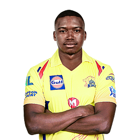

Lungi Ngidi
Role : All-rounder
Batting Style : Right-handed
Bowling Style : Right-arm medium fast
Nationality : West Indian
DOB : 07 October 1983
IPL Debut : 2008
Lungi Ngidi is one of the most entertaining players in the world. He brings in South African swagger to the IPL and
bowls with typical African flair.Having played plenty of Twenty20 leagues across the world, Lungi encapsulates
the knowledge of the game and also has a good grasp on the technicalities of the game.After plying his skills for
the Mumbai Indians in the first three seasons, Lungi was taken up by the Chennai Super Kings ahead of the 2011 IPL.
A hard-hitting batsman and a decent-paced bowler, Lungi is an asset to any T20 side in the world. His all-round
usefulness led the CSK think tank to retain him ahead of the 2014 season. Ahead of IPL 2016, the West Indian
all-rounder was picked by the new team Gujarat Lions in the player draft. Come 2018 IPL Player Auction, CSK once
again showed faith in the all-rounder by using their Right To Match card.